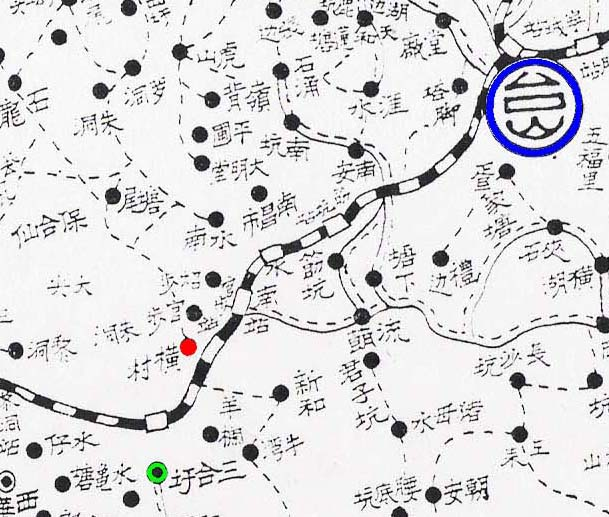

Võng Tûn 潢村 on the map is shown as 橫村 Vãng Tûn, which is incorrect. The distance from 三合 Xäm Gâp to 潢村 Võng Tûn is about 1 mile. Note that names on the map are written top to bottom or right to left. Writing right to left is the traditional style when words are written horizontally. Click on HoiSan map on sidebar to see a larger map. |
|  |